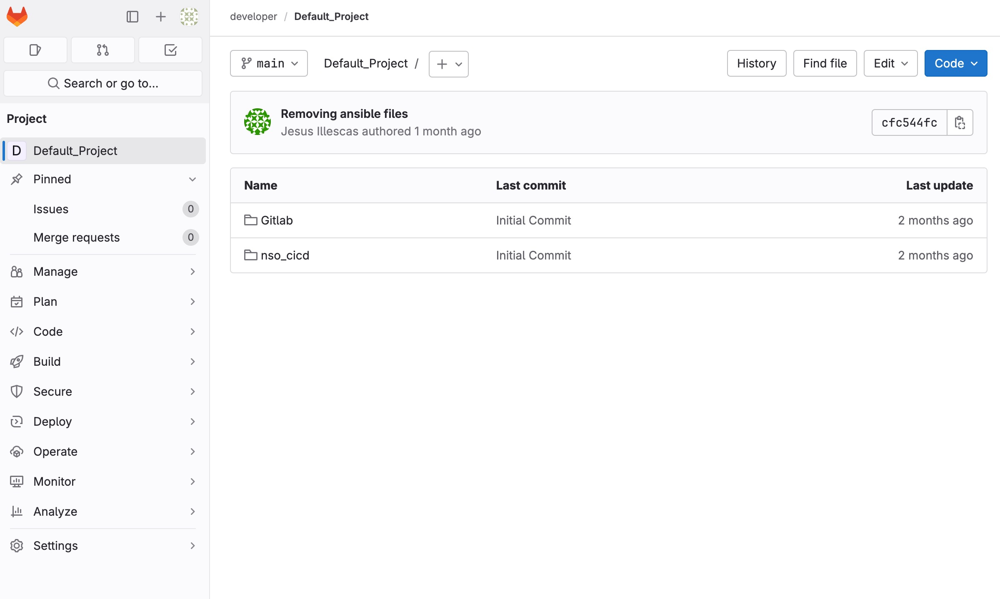
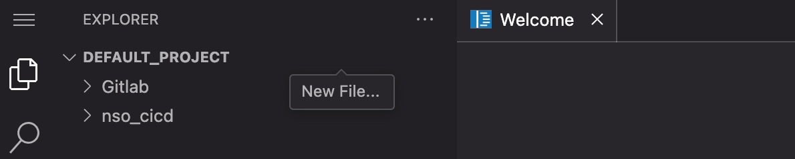
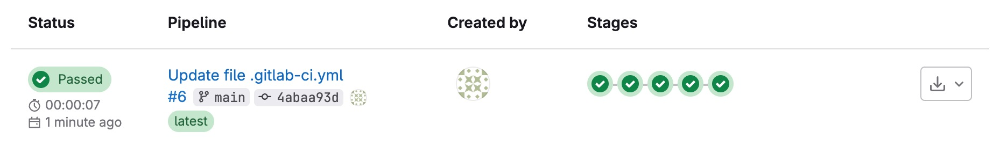
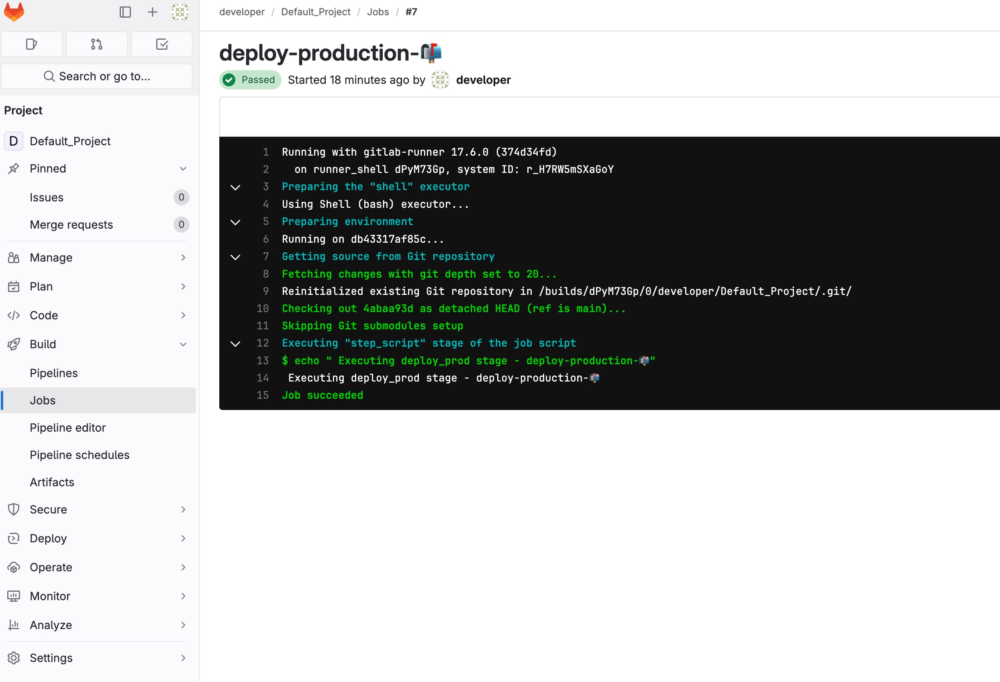
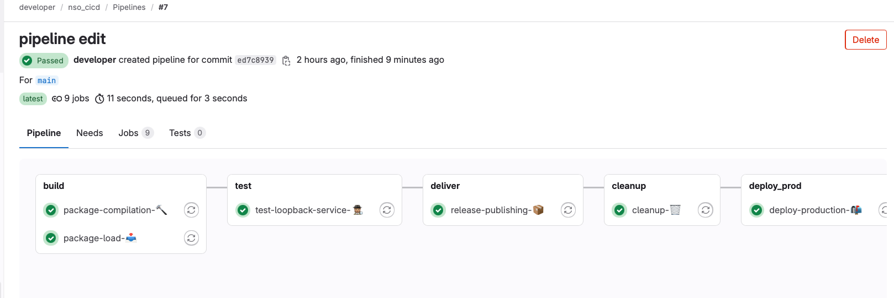

Define the CI/CD Pipeline
REMINDER - What is a Pipeline?
The CI/CD pipeline is responsible for validating changes made to files in the GitLab repository, running automated tests, and deploying code to production if all validations and tests pass.
In GitLab, a pipeline is defined using a YAML file, often named .gitlab-ci.yml. This file specifies the tasks to be executed as part of the pipeline, which are organized into stages such as build, test, and deploy, with specific task definitions for each stage.
A pipeline can consist of various stages, each designed to perform specific actions, including: * Building and compiling code or packages * Deploying to a test environment * Executing test cases to validate functionality * Cleaning up development environments * Deploying to production environments
These actions are executed by 'runners.' In the sandbox, a runner is automatically registered for all projects, with most of the tools you need. In this task, you'll follow a step-by-step process to create a pipeline tailored to your project.
In this project repository, you will store your files and add a CI file that can be interpreted by GitLab. This file is the collection of stages and tasks that will make up your pipeline. Next, add your configuration template to the repository. Storing it centrally enables tracking of changes, collaborative work, and rollback of commits if needed. After your files are set, create the CI file called .gitlab-ci.yml to describe the procedure of your pipeline.
Task 1: Open the Web IDE
We'll use the Web IDE to make changes. Open up the Default Project and select the Web IDE from the Edit dropdown.

Task 2: Create a New GitLab CI File
Next, create the pipeline definition in the GitLab repository. This triggers an initial execution of the pipeline because you are adding the .gitlab-ci.yml file to the repo. No changes will be made to the network devices yet, as you have not made any changes to the definition files.

To save time, we've provided an example pipeline below. Copy and paste this into your new CI file:
Note: For more details on the pipeline configuration, see the GitLab documentation.
Commit your changes to the main branch by selecting the Source Control icon on the left.
Task 3: Examine the Pipeline Job
Navigate to http://devtools-gitlab.lab.devnetsandbox.local/developer/Default_Project/-/pipelines. The pipeline should pass, since no changes are being made. If you click on the "passed" indication in the Status column, you should see that only the deploy_prod stage executed. This is because the pipeline configuration in .gitlab-ci.yml has except clauses on the test stages for the main branch.

To verify that the script executed properly, open the job details.

To view detailed information about each stage, click on the passed button in the status column.
